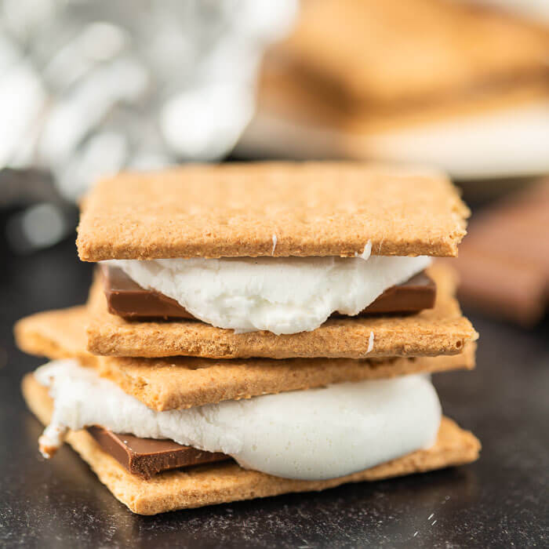

Smores

An American classic treat, traditionally made on camping trips over a fire. But can be made at home just as well to be enjoyed anytime! Melted chocolate and marshmellows pressed between two graham crackers
Ingredients:
- Graham Crackers
- Marshmellows
- Hershey's chocolate bars
Steps:
- Use a poker stick to roast a marshmellow over a heat source.
- When marshmellow is ready, take a graham cracker- break it in half
- Place piece of chocolate onto cracker, and smoosh melted marshmellow on top
- Close smore with graham cracker, and press togther
- Enjoy!